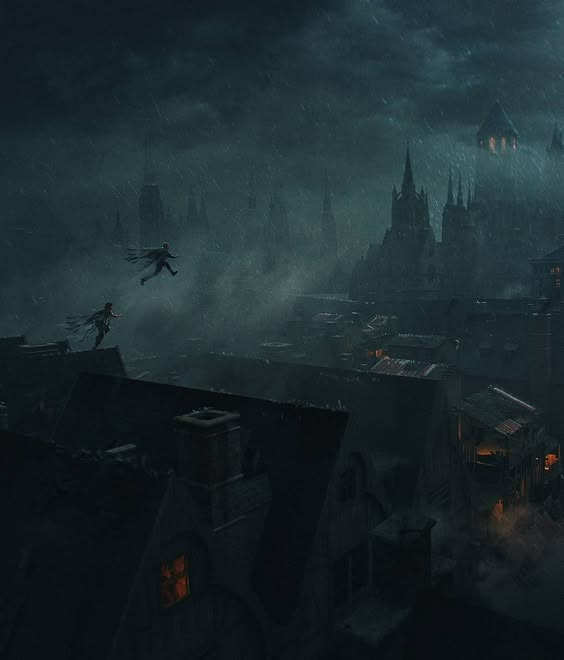
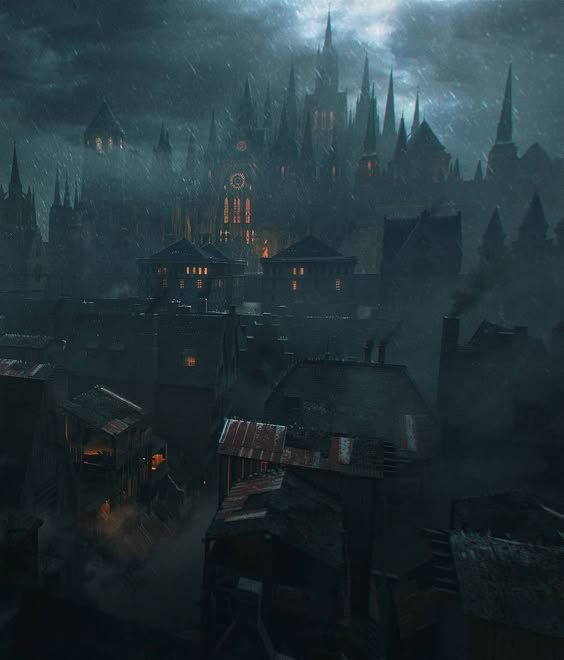
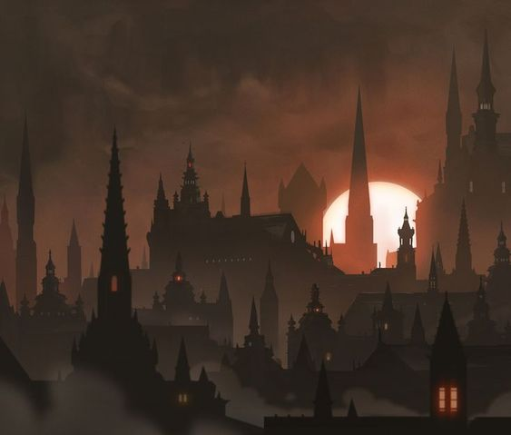
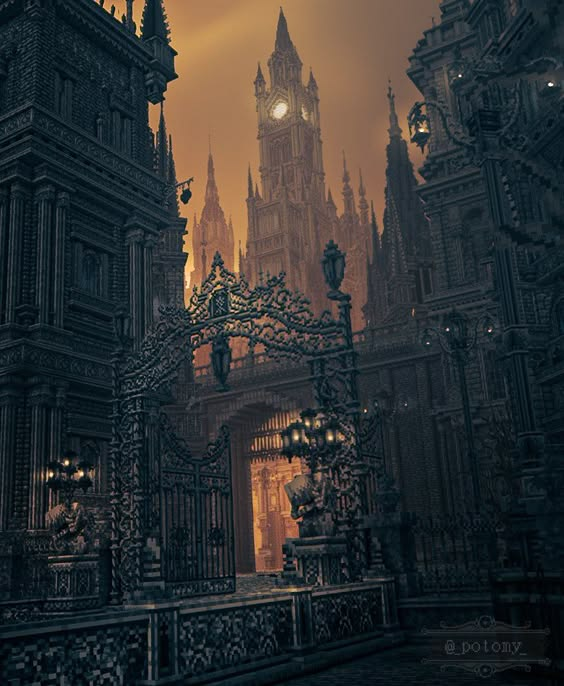
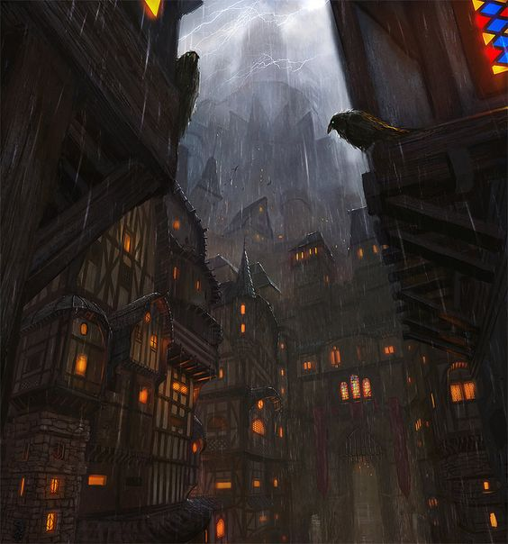
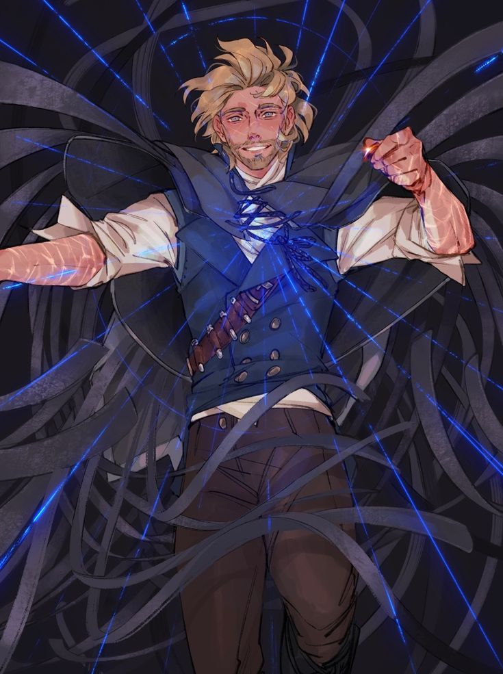
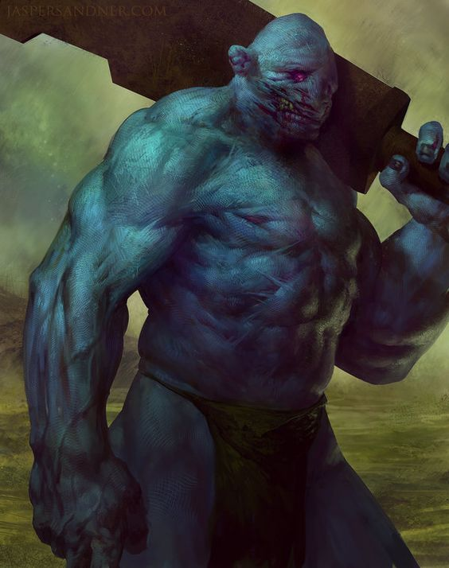
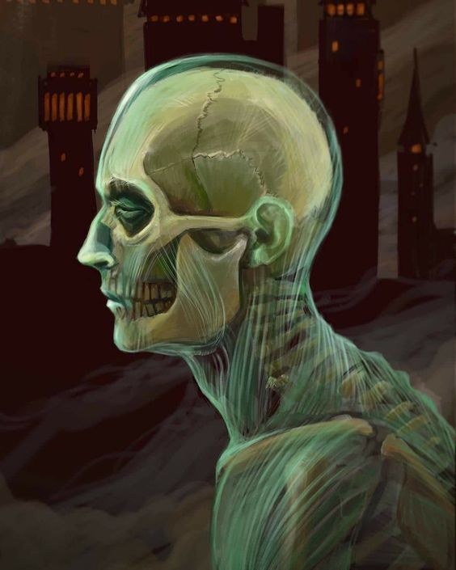

Sootwarrens
Sootwarrens es una de las áreas más notables de Luthadel en el universo de Mistborn de Brandon Sanderson. Es un distrito que representa la opresión y las duras condiciones de vida de los skaa, la clase baja del Imperio Final. Aquí hay algunos aspectos destacados sobre Sootwarrens:
- Condiciones de Vida: Sootwarrens es conocido por ser un lugar sombrío y miserable. Las calles están sucias y llenas de hollín, lo que da al área su nombre. Las condiciones de vida son extremadamente difíciles, con pobreza, violencia y enfermedades que afectan a los habitantes.
- Población Skaa: La mayoría de los residentes de Sootwarrens son skaa, que viven en un estado de constante opresión bajo el régimen del Lord Legislador. La falta de derechos y la explotación son comunes, lo que contribuye a un ambiente de desesperación y resistencia.
- Elementos de la Trama: Sootwarrens es un lugar donde se desarrollan eventos cruciales en la historia, incluidos encuentros entre personajes clave, como Vin y otros miembros de la resistencia. La atmósfera tensa y peligrosa del distrito refuerza la lucha de los skaa contra el sistema opresivo.
- Simbolismo: Este distrito simboliza la lucha de los oprimidos y la corrupción del sistema. A medida que la historia avanza, Sootwarrens se convierte en un punto de convergencia para la rebelión y el cambio, representando la esperanza de un futuro mejor a pesar de las adversidades.
Blockstreet
Blockstreet es otro de los distritos de Luthadel en el universo de Mistborn de Brandon Sanderson. Este lugar, al igual que Sootwarrens, es representativo de las tensiones y desigualdades presentes en el Imperio Final. Aquí te dejo algunos puntos clave sobre Blockstreet:
- Características del Distrito: Blockstreet es conocido por sus calles estrechas y laberínticas, donde los edificios están construidos de manera compacta y a menudo son altos. El ambiente es opresivo y, al igual que en otras partes de Luthadel, el hollín y la suciedad son comunes. Esto refleja el estado deteriorado de la ciudad y la vida de sus habitantes.
- Población: Aunque Blockstreet también alberga a una población de skaa, en este distrito viven tanto nobles como skaa, lo que crea un ambiente más complejo en términos de interacciones sociales. Sin embargo, la opresión y el miedo hacia el Lord Legislador son palpables, y la desconfianza entre las clases es común.
- Puntos de Encuentro: Blockstreet sirve como escenario para varios eventos clave en la historia, incluidos encuentros clandestinos entre skaa y nobles. Estos encuentros son cruciales para el desarrollo de la trama, ya que muestran la creciente resistencia contra el régimen opresor.
- Simbolismo y Temas: Blockstreet simboliza las divisiones sociales y las luchas de poder en Luthadel. Las interacciones en este distrito destacan los conflictos entre nobles y skaa, así como la lucha por la libertad y la igualdad. Es un reflejo de la complejidad del mundo creado por Sanderson, donde la revolución no es solo una lucha física, sino también una batalla de ideologías.
Hotel District
Hotel District es otro de los importantes distritos de Luthadel en el universo de Mistborn de Brandon Sanderson. Este distrito es notable por varias razones:
- Lujoso y Elegante: A diferencia de Sootwarrens y Blockstreet, el Hotel District está marcado por la opulencia y el lujo. Es un área donde se concentran los nobles y las clases altas del Imperio Final. Los hoteles, mansiones y salones de este distrito son lujosos y están decorados con esmero, reflejando el poder y la riqueza de sus residentes.
- Centro de la Vida Social: El Hotel District es un punto de encuentro clave para la elite noble. Aquí se llevan a cabo banquetes, fiestas y otros eventos sociales que son fundamentales para el establecimiento y el mantenimiento de alianzas políticas y matrimoniales entre las casas nobles.
- Contraste con los Distritos Pobres: La opulencia del Hotel District contrasta fuertemente con las condiciones miserables de los distritos skaa, como Sootwarrens. Este contraste subraya la desigualdad y la injusticia del sistema social del Imperio Final, donde la riqueza y el estatus están concentrados en unas pocas manos.
- Puntos de Encuentro Clave: A lo largo de la serie, el Hotel District es escenario de importantes interacciones y desarrollos de la trama. Personajes como Vin y Elend Venture se involucran en las dinámicas de poder y las intrigas que se desarrollan en este entorno, lo que es crucial para la evolución de la historia.
Comercial District
Comercial District es otro de los distritos clave en Luthadel dentro del universo de Mistborn de Brandon Sanderson. Este distrito desempeña un papel fundamental en la economía de la ciudad y refleja la dinámica entre las clases sociales del Imperio Final. Aquí hay algunos aspectos importantes sobre el Comercial District:
- Centro Económico: Como su nombre indica, el Comercial District es el corazón del comercio en Luthadel. Aquí se encuentran numerosas tiendas, mercados y comerciantes que ofrecen productos y servicios a la población, tanto a nobles como a skaa. Este distrito es vital para la economía de la ciudad, ya que facilita el intercambio de bienes.
- Diversidad de Comerciantes: En el Comercial District conviven diferentes tipos de comerciantes, desde aquellos que venden bienes lujosos y costosos para la nobleza hasta los que ofrecen productos más básicos para la clase trabajadora. Esta diversidad refleja la jerarquía social del Imperio, con los nobles disfrutando de productos exóticos y los skaa limitándose a lo esencial.
- Interacciones Sociales: Este distrito sirve como un lugar de encuentro donde las diferentes clases pueden cruzarse. Las interacciones entre nobles y skaa son especialmente significativas, ya que revelan las tensiones y la desconfianza que existen entre las clases. Sin embargo, también proporciona un espacio donde se desarrollan relaciones y conspiraciones que impactan en la trama.
- Eventos Clave: A lo largo de la serie, el Comercial District es escenario de eventos importantes. Las actividades comerciales no solo afectan la economía, sino que también influyen en la política y las intrigas sociales. Las decisiones tomadas aquí pueden tener repercusiones significativas en el curso de la historia.
Luthadel
Luthadel es la capital del Imperio Final en la serie Mistborn de Brandon Sanderson y juega un papel central en la trama. Aquí te dejo un resumen detallado de sus características, historia y relevancia en la serie:
- Luthadel se caracteriza por su arquitectura sombría y monumental, construida principalmente con piedra y acero. Los edificios son a menudo grandes y de líneas duras, lo que refleja la opresión del régimen que gobierna la ciudad.
- El ambiente de Luthadel es gris y cubierto de hollín debido a la contaminación de la niebla que emana del Págano, el miasma que rodea la ciudad y que se considera un fenómeno natural asociado al poder del Lord Legislador.
- Esta disparidad social es un elemento central de la historia, impulsando la narrativa de resistencia y lucha por la libertad.
- La ciudad es un símbolo del régimen totalitario del Lord Legislador, donde la ley es inquebrantable y el disenso es castigado severamente.
Kelsier
Kelsier, conocido como "El Sobreviviente", es un ex-noble que se convierte en un líder de la resistencia contra el Lord Legislador y su opresivo régimen. A lo largo de la historia, es un personaje carismático y audaz, con una profunda convicción de que el pueblo skaa puede liberarse de su servidumbre.
Kolos
Los Kolos son criaturas gigantes y brutales en el universo de Mistborn, creadas por el Lord Legislador a partir de los skaa. Con una altura de entre tres y cinco metros, tienen un aspecto grotesco y son conocidos por su fuerza descomunal y comportamiento agresivo. Aunque carecen de habilidades alománticas, son utilizados como soldados en el Imperio Final. Su existencia simboliza la opresión y el control del régimen, y representan los extremos a los que llega el poder para mantener su dominio. Su presencia en la historia refuerza los temas de lucha y resistencia contra la tiranía.
Kandras
Los Kandras son criaturas en el universo de Mistborn que pueden cambiar de forma al consumir el cadáver de una persona. Tienen habilidades alománticas limitadas y siguen un estricto código moral. Su capacidad de infiltración los convierte en personajes clave en las intrigas políticas del Imperio Final.
Sazed
Sazed es un personaje clave en Mistborn, un Terris con la habilidad de usar alomancia y feruquía. Como erudito, posee un vasto conocimiento sobre la historia y las religiones del mundo. Su lealtad a la causa de la resistencia lo lleva a unirse a Vin y Kelsier en su lucha contra el Lord Legislador. A lo largo de la serie, Sazed enfrenta dilemas morales y busca su propio propósito, convirtiéndose en un pilar de apoyo para los protagonistas.
Lord Legislador
El Lord Legislador es el tirano inmortal que gobierna el Imperio Final en Mistborn. Considerado una figura casi divina, utiliza su poder alomántico y su control sobre los Kolos y otros seres para oprimir a los skaa. Su régimen es brutal y totalitario, y su figura simboliza la corrupción y la opresión. A lo largo de la serie, su verdadera naturaleza y los secretos de su poder se revelan, influyendo en la lucha por la libertad de los oprimidos.